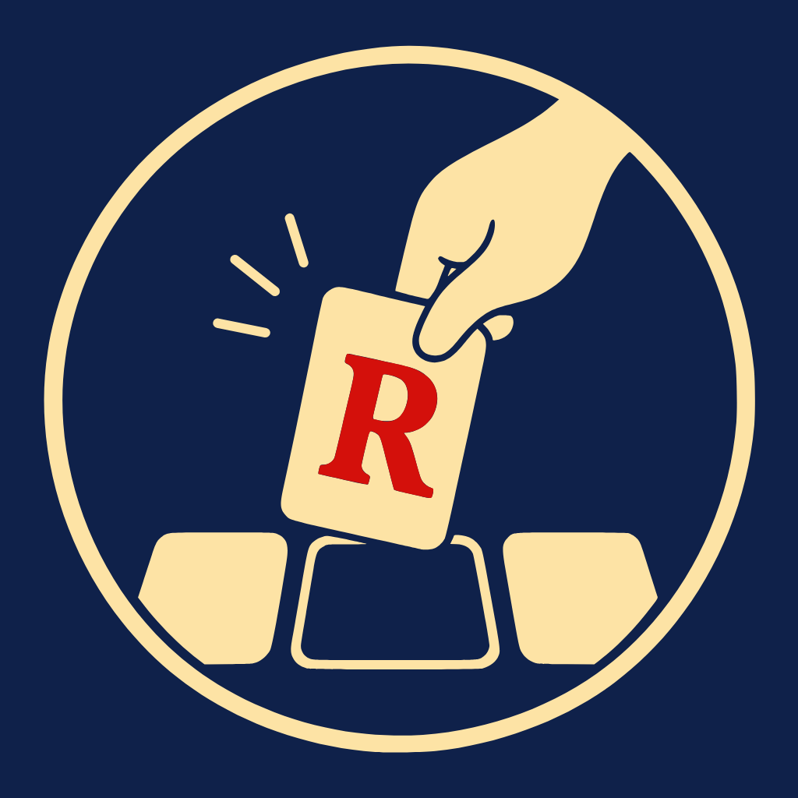
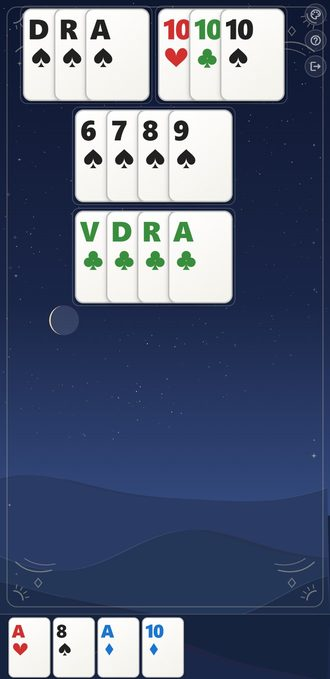
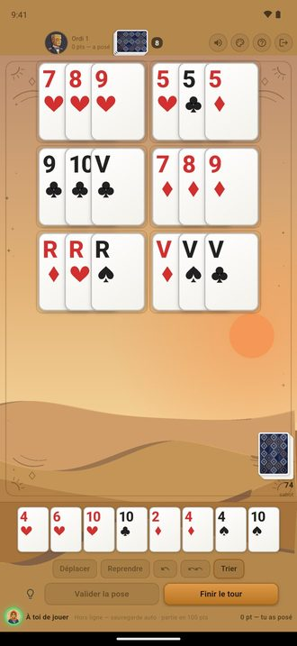
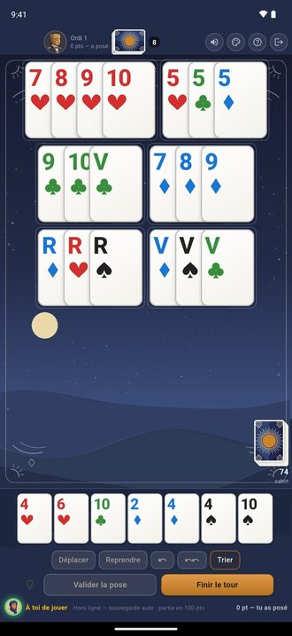
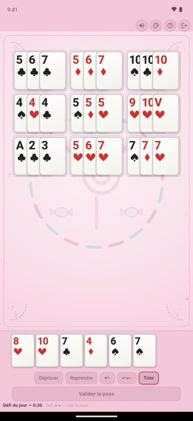
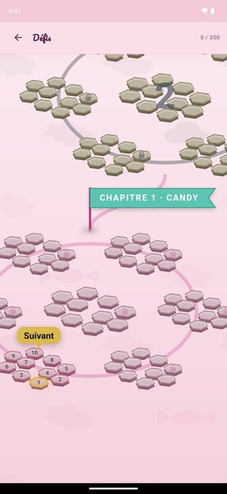
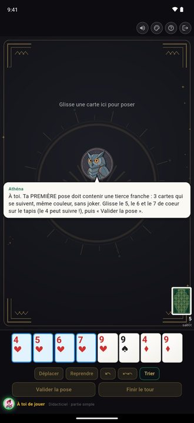
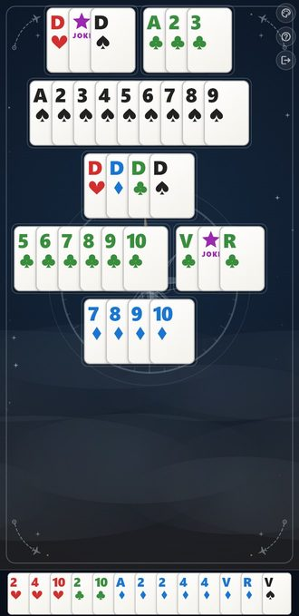
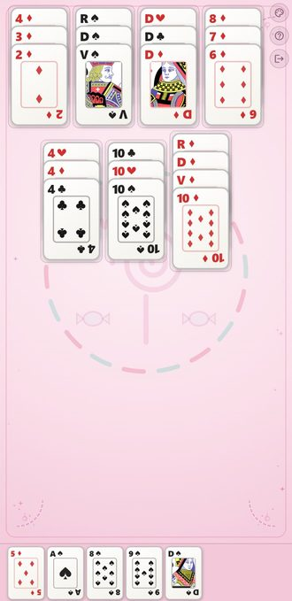
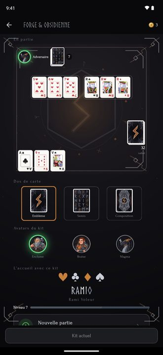

Ramio, le rami voleur en application
Par Quintain Games, un studio de deux personnes à Angers.

Un jeu de cartes de famille que beaucoup ont joué sans en connaître le nom, transformé en application par un couple angevin. Onze langues, gratuit. Bêta ouverte depuis le 2 septembre, sortie officielle le 8 octobre 2026 sur Google Play et l'App Store.
Le casse-tête se joue dans le navigateur en trente secondes : recomposez les cartes de la table pour vous débarrasser des cartes de votre main.
L'histoire en trois lignes
Le rami voleur se joue avec deux jeux de 52 cartes et deux jokers. On reçoit treize cartes, on pioche à chaque tour, on ne se défausse jamais : pour se débarrasser de sa main, on a le droit de démonter et recomposer toutes les combinaisons déjà posées sur la table. Selon les familles, il s'appelle rami voleur, Räuber-Rommé en Allemagne, Machiavelli en Italie, mexe-mexe au Brésil.
Pour y jouer avec ses proches malgré la distance, il n'existait rien en ligne avec de vraies cartes. Tristan Hurel, enseignant, et Iris Andrieux, étudiante, ont créé Ramio à Angers pour combler ce vide. Le didacticiel apprend le jeu en cinq minutes ; l'application se joue en onze langues, dans le monde entier.
Les chiffres, au 15 septembre 2026
Jusqu'au 8 octobre et dans la limite de 1 000, chaque compte créé garde la version premium à vie, avec son numéro de fondateur. Chiffres actualisés sur demande.
Ce qu'il y a dans Ramio
- De 2 à 4 joueurs par table : parties publiques en ligne, salons privés entre amis par lien ou code, parties en différé un tour par jour.
- Contre l'ordinateur, à quatre niveaux, même sans connexion.
- 670 casse-têtes, un casse-tête du jour commun au monde entier avec classement, des duels de rapidité entre amis.
- 17 kits d'ambiance et des personnages à débloquer en jouant.
- Onze langues : français, anglais, allemand, espagnol, italien, portugais, polonais, roumain, turc, hongrois, arabe.
Visuels
Écrans réels de l'application, en version téléphone. Libres d'utilisation pour la presse, avec la mention « Quintain Games ». Cliquez sur une image pour la version HD ; d'autres formats sur demande.
{kind=link}

{kind=link}

{kind=link}

{kind=link}

{kind=link}

{kind=link}


{kind=link}

{kind=link}

{kind=link}

{kind=link}
Le studio
Quintain Games, Angers. Deux personnes. Ramio est le premier jeu du studio ; la marque est déposée à l'INPI depuis le 14 juillet 2026. Au lancement, le jeu se financera par la publicité et une version premium à 5,99 euros.
Contact presse
Tristan Hurel & Iris Andrieux
06 52 35 88 11 · contact@quintaingames.com
Disponibles pour une démonstration de dix minutes, à la rédaction ou par téléphone, tous les jours du 17 au 27 septembre.
Site : quintaingames.com/ramio · Google Play et TestFlight y sont liés.